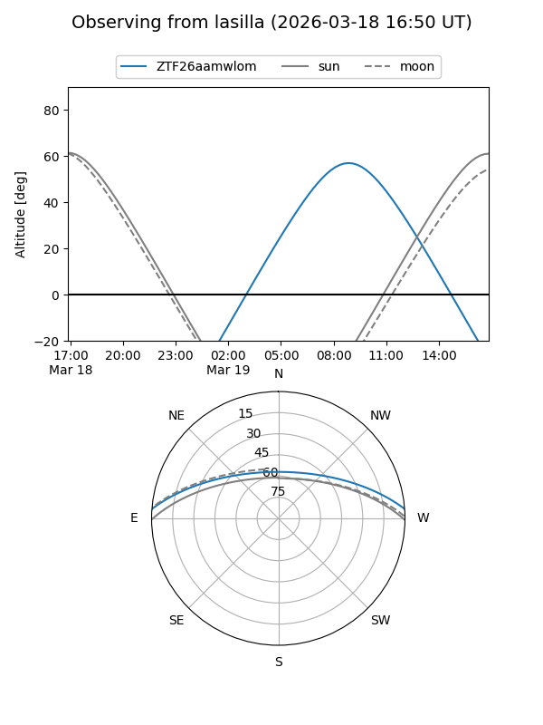
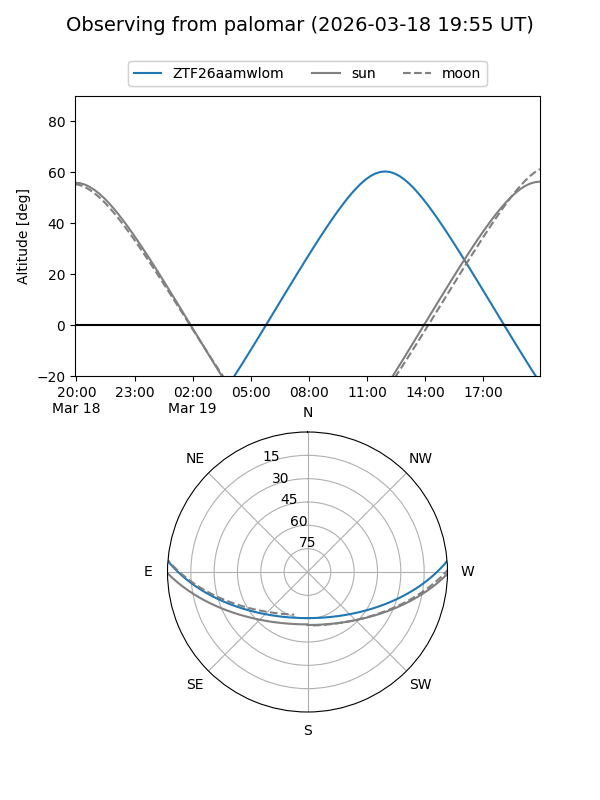

ZTF26aamwlom
Target ZTF26aamwlom at 2026-03-18 15:29
Aliases and brokers:
FINK: link
Lasair: link
ALeRCE: link
alt names
ZTF26aamwlom (ztf,fink_ztf)
Coordinates:
equatorial (ra, dec) = 238.7696,+3.79250
equatorial (HMS+DMS) = 15:55:04.69,+03:47:33.00
galactic (l, b) = (13.1541,+40.39443)
Flags:
Photometry:
last ztfg=20.06
1 ztfg detections
Lightcurve
Visibility


Additional plots